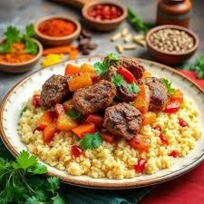

Home
Kusksu

Description
Kusksu is a comforting staple of North African cuisine, featuring fluffy couscous over a rich and intense tomato-based broth.
What elevates this dish is the customary presentation and addition of a topping called "Bsalet", a mix of caramelized onions and chickpeas. Kuskus is a spectacular, aromatic meal traditionally served from a large communal platter during family getherings and celebrations.
Ingredients
- 1 lb stewing beef cut into large pieces
- 1 1/2 tablespoons oil, for frying
- 1 large onion, havled and cut in half rings
- 1 tablespoon extra virgin olive oil
- 3 garlic cloves, finely chopped
- 2 medium potatoes, peeled and havled
- 2 carrots, halved
- 8 ounces pumpkin or yam, cut into large pieces
- 1 cup cooked garbanzo beans
- 1 bay leaf
- 1 teaspoon hot chili powder
- 1/3 cup tomato puree
- 1/2 cup chopped tomatoes
- 1 tablespoon brown sugar
- 1 1/2 teaspoons salt
- 3 cups beef broth
- Couscous, any amount
- 2 cinnamon sticks broken into 4 pieces each
- 4 teaspoons cumin seeds
- 4 teaspoons coriander seeds
- 2 red chilies
- 1 teaspoon allspice berries
Instructions
- Heat a large non-stick frying pan then add the cinnamon, cumin, coriander, chilies, and allspice berries. Toast for about 4 minutes stirring frequently, until the spices become very fragrant. Transfer to a bowl to let cool, then grind in a spice or coffe grinder.
- Heat the oil in a Dutch oven over medium-high heat and fry the beef until nicely browned on all sides. Add the onion and cook until soft and translucent or 5-7 minutes, then add the garlic and cook for another minute.
- Add the chili powder, grinded spices, tomatoes, tomato puree, beef stock, salt, and brown suger. Bring the mixture to a boil, reduce to a simmer, cover and cook for 30 minutes.
- Add the vegetables and garbanzo beans, return to a boil, reduce, cover and let simmer for another 40 minutes until the vegetables and beef are tender and the sauce has thickened.
- To serve, add the couscous to a serving platter, arrange the meat and vegetables on top then ladle the tomato-based souce over everything.